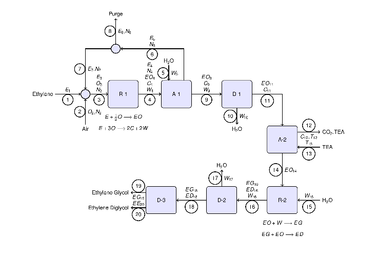

Ethylene Glycol Flowsheet
Murphy (2005), Problem P3.50, page 260. Consult the problem statement for further details.
Contents
Required Matlab
- CVX
- displaytable.m
Show Flowsheet
The flowsheet has been transcribed from the problem statement. The streams are numbered and labeled with component flows.
[I,m] = imread('ethylene_glycol_flowsheet.png','png'); I = imresize(I,0.25,'Method','nearest','Antialiasing',false); imshow(I,m); axis off;
CVX Model
cvx_begin
% Stream Variables (37)
variables E1
variables O2 N2
variables E3 O3 N3
variables E4 N4 EO4 C4 W4
variables W5
variables E6 N6
variables E7 N7
variables E8 N8
variables EO9 C9 W9
variables W10
variables EO11 C11
variables C12 T12
variables T13
variables EO14
variables W15
variables W16 EG16 ED16
variables W17
variables EG18 ED18
variables EG19
variables ED20
% Extents of Reaction (4)
variables X1 X2 X3 X4
% MATERIAL BALANCES (31)
% Mixer (3)
0 == E1 + E7 - E3;
0 == O2 - O3;
0 == N2 + N7 - N3;
% Reactor R-1 (6)
0 == E3 - E4 - X1 - X2;
0 == O3 - 0.5*X1 - 3*X2;
0 == N3 - N4;
0 == -EO4 + X1;
0 == -C4 + 2*X2;
0 == -W4 + 2*X2;
% Absorber A-1 (5)
0 == E4 - E6;
0 == N4 - N6;
0 == EO4 - EO9;
0 == C4 - C9;
0 == W4 + W5 - W9
% Purge (2)
0 == E6 - E7 - E8;
0 == N6 - N7 - N8;
% Distillation D-1 (3)
0 == EO9 - EO11;
0 == C9 - C11;
0 == W9 - W10;
% Absorber A-2 (3)
0 == EO11 - EO14;
0 == C11 - C12;
0 == T13-T12;
% Reactor R-2 (4)
0 == EO14 - X3 - X4;
0 == -EG16 + X3 - X4;
0 == -ED16 + X4;
0 == W15 - W16 - X3;
% Distillation D-2 (3)
0 == EG16 - EG18;
0 == ED16 - ED18;
0 == W16 - W17;
% Distillation D-3 (2)
0 == EG18 - EG19;
0 == ED18 - ED20;
% SPECIFICATIONS (7)
% Air composition
0.21*N2 == 0.79*O2;
% Feed rate of Ethylene
E1 == 1000;
% CO2 Production
C12 == 50;
% 25% Fractional Conversion in R-1
E4 == 0.75*E3;
% Feed rate of Water at R-2
W15 == 5*EO14;
% Diglycol Production
ED16 == 0.1*EG16;
% Water in A-1
W5 == 2*EO4;
% Purge Fraction
N8 == 0.05*N6;
E8 == 0.05*E6;
cvx_end
Homogeneous problem detected; solution determined analytically. Status: Solved Optimal value (cvx_optval): +0
Streamtable
The stream variables are organized into a stream table. To keep the width small enough to fit on a sheet of paper, the stream table is presented with columns representing components, and rows denoting streams.
flows = [ ... E1 0 0 0 0 0 0 0 0; 0 O2 N2 0 0 0 0 0 0; E3 O3 N3 0 0 0 0 0 0; E4 0 N4 EO4 C4 W4 0 0 0; 0 0 0 0 0 W5 0 0 0; E6 0 N6 0 0 0 0 0 0; E7 0 N7 0 0 0 0 0 0; E8 0 N8 0 0 0 0 0 0; 0 0 0 EO9 C9 W9 0 0 0; 0 0 0 0 0 W10 0 0 0; 0 0 0 EO11 C11 0 0 0 0; 0 0 0 0 C12 0 T12 0 0; 0 0 0 0 0 0 T13 0 0; 0 0 0 EO14 0 0 0 0 0; 0 0 0 0 0 W15 0 0 0; 0 0 0 0 0 W16 0 EG16 ED16; 0 0 0 0 0 W17 0 0 0; 0 0 0 0 0 0 0 EG18 ED18; 0 0 0 0 0 0 0 EG19 0; 0 0 0 0 0 0 0 0 ED20]; comps = {'E','O','N','EO','CO2','W','TEA','EG','ED'}; displaytable(flows,'S',comps);
E O N EO CO2 W TEA EG ED S(1) 1000 0 0 0 0 0 0 0 0 S(2) 0 497.28 1870.7 0 0 0 0 0 0 S(3) 3478.3 497.28 37415 0 0 0 0 0 0 S(4) 2608.7 0 37415 844.57 50 50 0 0 0 S(5) 0 0 0 0 0 1689.1 0 0 0 S(6) 2608.7 0 37415 0 0 0 0 0 0 S(7) 2478.3 0 35544 0 0 0 0 0 0 S(8) 130.43 0 1870.7 0 0 0 0 0 0 S(9) 0 0 0 844.57 50 1739.1 0 0 0 S(10) 0 0 0 0 0 1739.1 0 0 0 S(11) 0 0 0 844.57 50 0 0 0 0 S(12) 0 0 0 0 50 0 0 0 0 S(13) 0 0 0 0 0 0 0 0 0 S(14) 0 0 0 844.57 0 0 0 0 0 S(15) 0 0 0 0 0 4222.8 0 0 0 S(16) 0 0 0 0 0 3448.6 0 703.8 70.38 S(17) 0 0 0 0 0 3448.6 0 0 0 S(18) 0 0 0 0 0 0 0 703.8 70.38 S(19) 0 0 0 0 0 0 0 703.8 0 S(20) 0 0 0 0 0 0 0 0 70.38